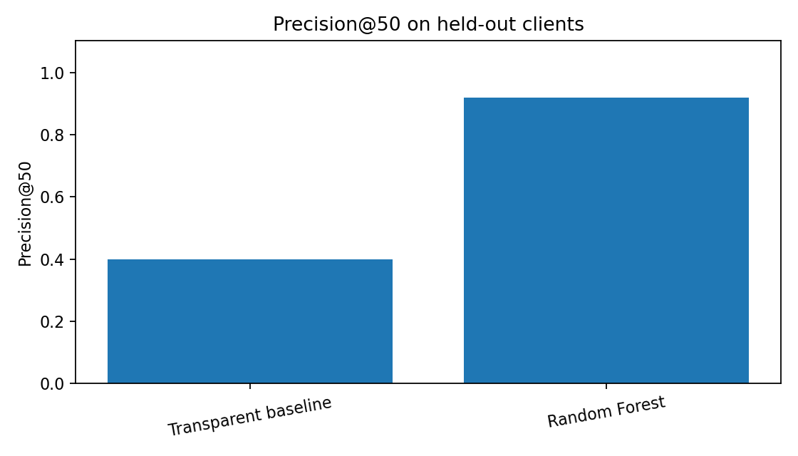
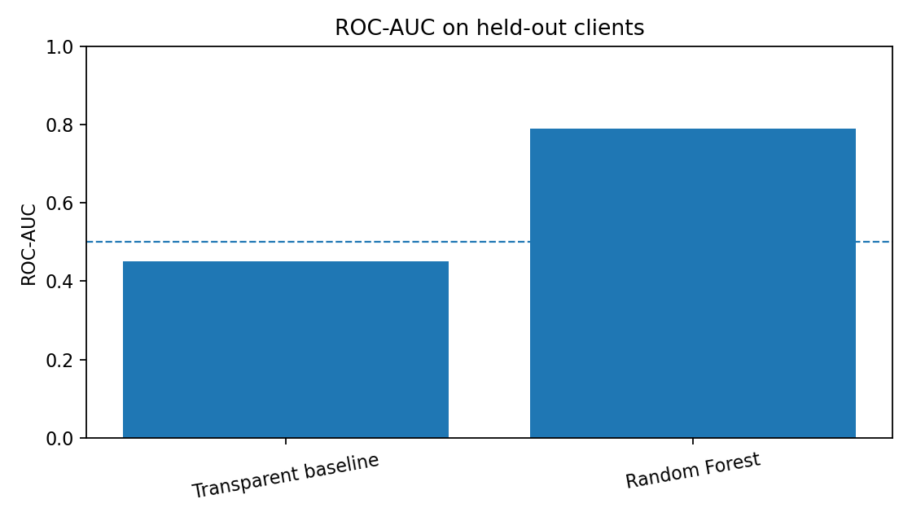
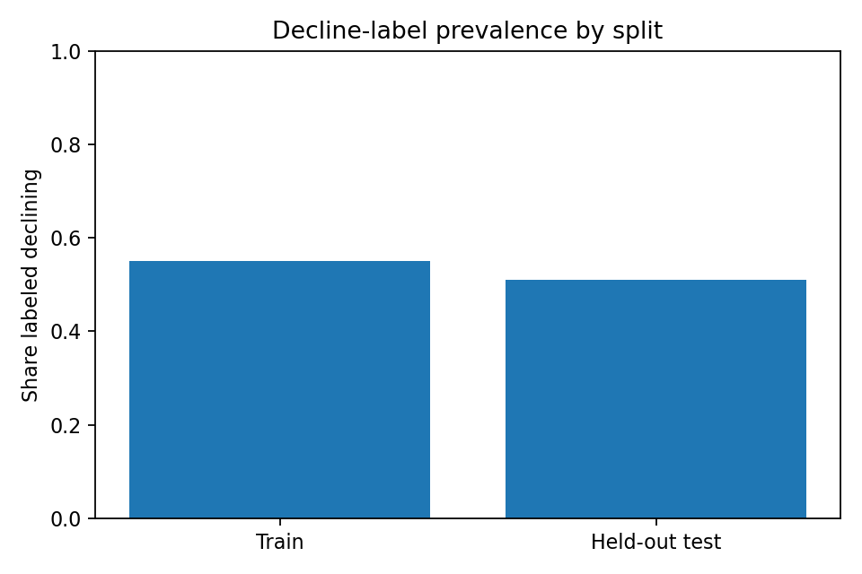

Abstract
This project asks whether available content and search-performance signals can help rank items for refresh review. It uses the prepared anonymized FlyRank feature vector and compares a transparent percentile-weighted baseline with a Random Forest. Evaluation uses a grouped client holdout so that clients in the test set are not present in training. On this run, baseline Precision@50 was 0.400 and Random Forest Precision@50 was 0.920; ROC-AUC was 0.450 for the baseline and 0.789 for the model. The results support only dataset-specific prioritization and do not establish that refreshing a page causes improved search performance.
1. Introduction and problem statement
Content teams have limited time for manual review. The decision supported here is which items should be inspected first, not which pages should automatically be changed. A ranked queue can make review more consistent, but its usefulness depends on whether it performs better than a simple, explainable rule and whether the evaluation avoids leakage.
2. Data
The analysis uses the prepared, anonymized feature vector at data/processed/refresh_feature_vector.csv from the repository's FlyRank ML Internship workflow. The target is the supplied is_declining_label. The notebook reports row and client counts at run time. It excludes client and content identifiers from model inputs, and excludes trend_direction and trend_pct because they are label-related fields. No client names, domains, URLs, private queries, credentials, or raw row-level exports are included in this paper.
Feature examples: search_volume, competition, competition_level, cpc, content_type, main_intent, word_count, char_count, provider_used, model_used, impressions_90d, clicks_90d, pageviews_90d, sessions_90d, users_90d, engaged_sessions_90d, ai_sessions_90d, scroll_events_90d ….
The exact release identifier and source date window should be stated only after confirming them against the dataset card and warehouse export used for this run. Do not infer a date range from file names alone.
3. Methodology
Label and assumptions
The task is framed as ranking items associated with the supplied decline label. The label is treated as an observed dataset outcome, not a future outcome unless the source definition explicitly establishes that temporal relationship.
Baseline
The transparent baseline combines percentile ranks of available staleness, search-demand, and impression signals with weights 0.50, 0.30, and 0.20 respectively; weights are renormalized if a component is unavailable. This is a heuristic prioritization score, not a trained predictor.
Model and validation
A Random Forest with 250 trees, maximum depth 10, minimum leaf size 10, class weighting, and a fixed random seed is compared with the baseline. The split holds out 20% of client groups. Numeric values are median-imputed; categorical values are imputed with the most frequent category and one-hot encoded. The same held-out rows are used for both methods.
Leakage checks: target, identifiers, trend_direction, and trend_pct are excluded. Potentially suspicious feature names are printed for manual review. The split assertion verifies zero client overlap.
4. Results
The Random Forest ranked more positive examples in the top 50 than the transparent baseline on this held-out split. The Random Forest had higher ROC-AUC than the baseline.
| Method | Precision@50 | ROC-AUC | Precision at 0.5 | Recall at 0.5 | F1 at 0.5 |
|---|---|---|---|---|---|
| Transparent baseline | 0.400 | 0.450 | 0.460 | 0.408 | 0.432 |
| Random Forest | 0.920 | 0.789 | 0.687 | 0.766 | 0.724 |



Split details: 23,837 training rows across 25 clients and 6,163 held-out rows across 7 clients. Client overlap was 0.
5. Limitations and honest framing
- The label's meaning and time horizon are inherited from the prepared feature vector. If it is derived from a contemporaneous trend field, the experiment should be described as label ranking/classification, not forecasting future decline.
- A single grouped split can be sensitive to which clients are held out. Repeated group splits or a time-aware evaluation would strengthen the evidence.
- Precision@50 depends on the test-set size and positive-label prevalence. Results should be interpreted alongside the baseline and label rate.
- Associations in this dataset do not show that refreshing content will cause clicks, impressions, or rankings to improve.
- This project does not reveal or prove Google's ranking algorithm and does not guarantee generalization to all sites or industries.
6. Ranked recommendations and action playbook
- HIGH PRIORITY — inspect first: review high-ranked items, confirm the search need is still relevant, and check for technical/indexing issues before editing.
- REVIEW — validate the opportunity: check recent impressions, clicks, CTR, position, engagement, and whether the page has already been updated.
- MONITOR — avoid unnecessary edits: retain items with weak or ambiguous signals and re-check them when newer data becomes available.
Reason codes in the internal queue include STALE_CONTENT, HIGH_SEARCH_DEMAND, and GENERAL_REVIEW where the relevant input fields exist. The full queue is kept in the repository output folder for internal analysis and is not embedded in this public paper.
7. Reproducibility
- Notebook:
work/notebooks/capstone.ipynb(commit this notebook after running it). - Metrics:
work/outputs/capstone_metrics.csv. - Ranked queue:
work/outputs/capstone_ranked_review_queue.csv(internal artifact; do not publish raw identifiers). - Charts:
docs/precision_at_50.png,docs/roc_auc.png, anddocs/label_prevalence.png.
To reproduce, install the repository requirements, run this notebook top-to-bottom, inspect the leakage warnings, and review the generated HTML before deployment.
8. Acknowledgments and data credit
Built on the FlyRank ML Internship dataset. Thanks to the dataset and internship team for providing an anonymized basis for this educational analysis.